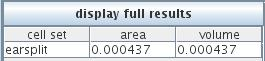
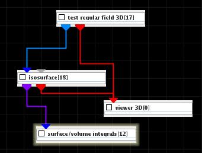

SURFACE/VOLUME INTEGRALS
The module calculates surface or volume integral.
Input data
Input data come from isosurface or isovolume data.
Output data

The result surface or volume integrals appear in the UI panel.
Example

Choose Test regular field 3D from test objects library, isosurface module from 3D field mappers and surface/volume integrals module from utilities library and connect them. The result appears in the UI panel of surface/volume integrals module.